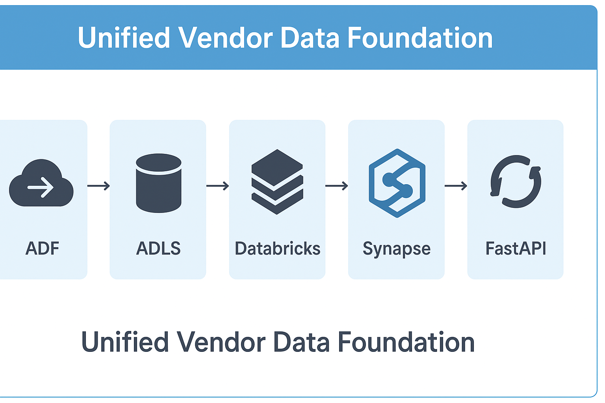

Project Background
This project was inspired by my understanding and insights gained throughout the interview process with QVC. It demonstrates how I would approach building a unified data foundation across multiple vendor sources, combining data contracts, automated validation, and API delivery within an Azure-style framework.
Architecture Overview
A modular Azure-based design ensuring quality, traceability, and scalability:
ADF → ADLS → Databricks → Synapse → FastAPI
Key Components
- Data Contracts: YAML-based schemas define expected fields and validation logic for each vendor feed.
- Data Quality: Python-driven DQ runner checks schema, nulls, negatives, and logic consistency before transformation.
- Normalization: Standardizes vendor datasets into one curated table (
unified_campaign_performance.csv). - APIs: FastAPI endpoints expose unified campaign metrics and DQ summaries for downstream analytics.
Live Demo Snapshot
A simplified unified view of campaign data with automated quality highlights:
| Vendor | Campaign ID | Impressions | Clicks | Spend | Conversions |
|---|
⚠️ Red rows highlight data issues detected automatically (e.g., negative spend or zero impressions).
Mock API Examples
Simulated FastAPI responses representing unified summary and DQ status:
GET /api/vendor_summary
→ {"meta": {"rows": 10, "avg_ctr": 0.045},
"tiktok": {"rows": 10, "avg_ctr": 0.031},
"youtube": {"rows": 10, "avg_ctr": 0.048}}
GET /api/data_quality_summary
→ {"meta": "passed", "tiktok": "2 warnings", "youtube": "passed"}
GitHub Repository
View the full source code on GitHub →Reflection & Impact
This project demonstrates how a unified vendor foundation can support scalable, trustworthy personalization at QVC. It combines automation, analytics, and governance every data stream to be validated, enriched, and delivered consistently. The approach reduces onboarding time for new vendors and ensures that QVC’s personalization systems always operate on clean, auditable data.